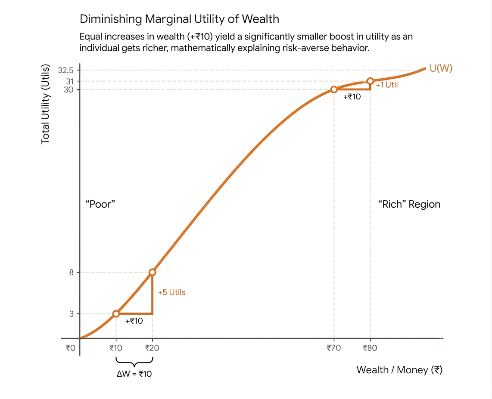

When we earn more money, our inconveniences reduce. We become "less sad" (alleviate from the position of scarcity). We move from basic needs to luxuries, and finally get to do things we always wanted.
This increase in conveniences, decrease in sadness is mistaken as increase in happiness. Hence, we associate more money with more happiness. But is it helpful to keep believing that?
This motivates us to work harder. Yet, once we start earning more, we don't see that increase in happiness because there are no more inconveniences to overcome.
Imagine upgrading from a bike worth 1 lakh to a car worth 21 lakhs. You gain shelter from weather, ease of travel, increased safety and comfort. The difference is massive and easily noticeable. Now imagine upgrading from an 21-lakh car to a 41-lakh car. You have a better car, of course, but the functional difference is nowhere near as life-changing as the first upgrade (provided we ignore the increase in social status and likes on your instagram posts).

The marginal utility of money continuously decreases as we earn more, it could become near zero or zero. In the worse-case scenarios, it becomes negative because we start to worry about losing our assets, or compromise our peace of mind just to keep earning more.
For instancce, I can eat street pani-puri if I want, but a famous celebrity can't, even if they wanted to. After a certain point, personal restrictions increase with increase in money/fame/status. The marginal utility of money turns negative. This doesn't mean we should stop earning and retreat to jungle; but if sacrifices are bigger than outcome, we should give it a second thought.
Thus, there is distinction between more happiness and less sadness.
A tangential thought
"Money doesn't matter" is a privileged statement of rich.
Again, only those who have abundance of something can claim it doesn't matter; like beautiful people say looks don't matter, academic toppers saying marks don't matter.
Balance is everything!